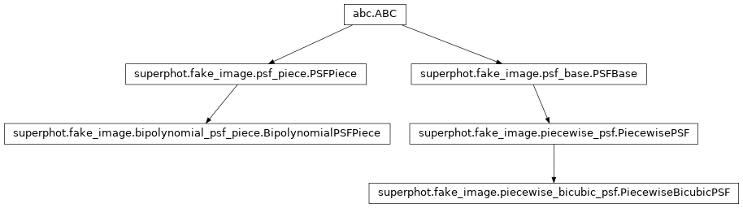
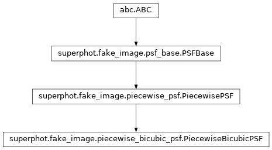

superphot.fake_image.piecewise_bicubic_psf module¶
Class Inheritance Diagram¶
Defines the PiecewiseBicubicPSF class.
-
class
superphot.fake_image.piecewise_bicubic_psf.PiecewiseBicubicPSF(boundaries, psf_parameters)[source]¶ Bases:
superphot.fake_image.piecewise_psf.PiecewisePSFA piecewise PSF class where the PSF over each piece is a bi-cubic function.
-
__init__(boundaries, psf_parameters)[source]¶ Initialize a PiecewiseBicubicPSF with the given shape.
Parameters: - boundaries – Dictionary (keys
xandy) listing the cell horizontal/vertical boundaries. - psf_parameters –
A dictionary of 2x2 structures with keys:
- values: The values of the piece bi-cubic polynomial af the
- intersections of the horizontal & vertical
boundaries.
- d_dx: The x derivatives of the piece bi-cubic polynomial af
- the intersections of the horizontal & vertical
boundaries.
- d_dy: The y derivatives of the piece bi-cubic polynomial af
- the intersections of the horizontal & vertical
boundaries.
- d2_dxdy: The x,y cross-derivatives of the piece bi-cubic
- polynomial af the intersections of the horizontal &
vertical
boundaries.
Returns: None
- boundaries – Dictionary (keys
-